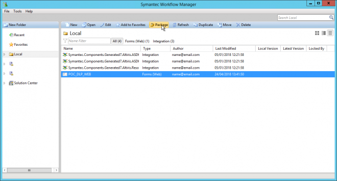
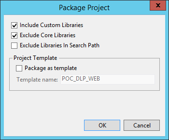
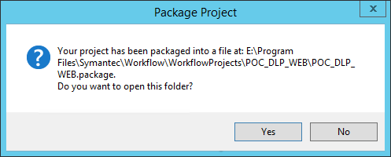
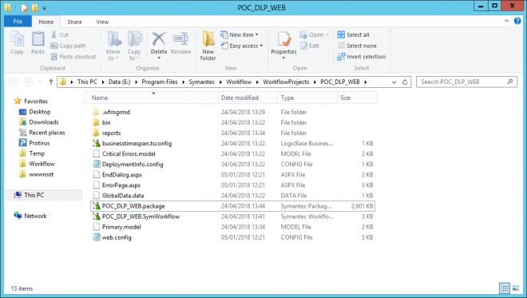
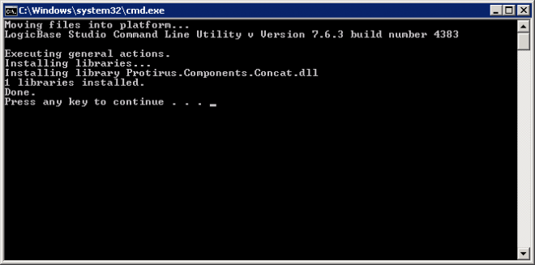

Package Project
There are a number of ways to Package a project.
In the Workflow Manager you can select a Project and click "Package"

Click on Package Project.
I usually untick "Include Custom Libraries" as I package and deploy them separately.

You will then be shown the path to the Package file which you can open if you wish.

There will be a new item in the directory
PROJECTNAME.package

This is just a ZIP of the project.
If you create a copy and rename
.zip
If you checked the "Include Custom Libraries" option there will be an added folder
customlib.forinstall
This will include the dlls and help files (.libconfig)
[There was a bat file that could be ran to install these into the CustomLib folder]
Just update the 'LBPath' to the correct drive.
@echo off
if !%1 == ! goto SetDefaultLBPath
set LBPath=%~1
goto CheckLBPath
:SetDefaultLBPath
set LBPath=E:\Program Files\Symantec\Workflow
:CheckLBPath
if not exist "%LBPath%" (
echo The directory "%LBPath%" does not exist!
echo Please provide the directory where LogicBase is installed as parameter 1.
echo Put in quotes if it is a long path.
PAUSE
goto :eof
)
if not exist "%LBPath%\Designer\bin\LBUtil.exe" (
echo The LogicBase Command Line Utility does not exist by path '%LBPath%\Designer\bin\LBUtil.exe'!
echo Please provide the directory where LogicBase is installed correctly as parameter 1.
echo Put in quotes if it is a long path.
PAUSE
goto :eof
)
@echo Moving files into platform...
"%LBPath%\Designer\bin\LBUtil.exe" -InstallCustomLibs -warn
PAUSE
Add it to the same folder as your dll and run.

Output
Moving files into platform...
LogicBase Studio Command Line Utility v Version 7.6.3 build number 4383
Executing general actions.
Installing libraries...
Installing library Protirus.Components.Concat.dll
1 libraries installed.
Done.
Press any key to continue . . .
Another option is to open the Project
Click the Project name in the Project tree.
Click on the Package Project button and repeat the same steps as above.
Forum
https://www.symantec.com/connect/forums/how-do-i-create-new-workflow-copied-existing-one